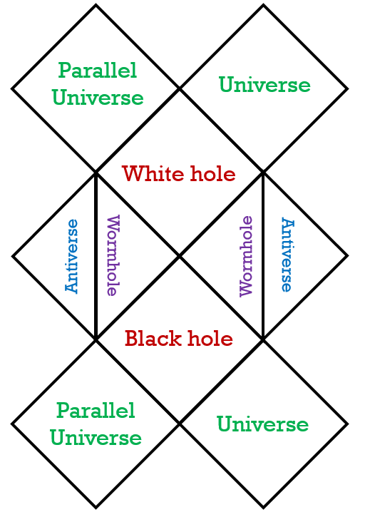

A Kerr black hole is one with angular momentum, but no charge. The Kerr solution to einstein's field equations were found by Roy Patrick Kerr, and it allowed scientists to understand rotating black holes before they were observed.
One feature of a rotating black hole is it's ring singularity; The rotation causes the otherwise point singularity to form into a ring. This feature will be important for the penrose diagram.
The Penrose diagram for a Kerr black hole looks almost identical to the one of a Reissner-Nordstrom black hole. The only difference is that travelling to the antiverses is possible by going through the ring singularity - it acts as a sort of pathway to the antiverse.
Since it is a spinning black hole, it has an ergosphere, like the Reissner-Nordstrom black hole, the Kerr black hole has a gravitationally repulsive center. Its rotation causes objects to always miss the singularity due to frame-dragging.